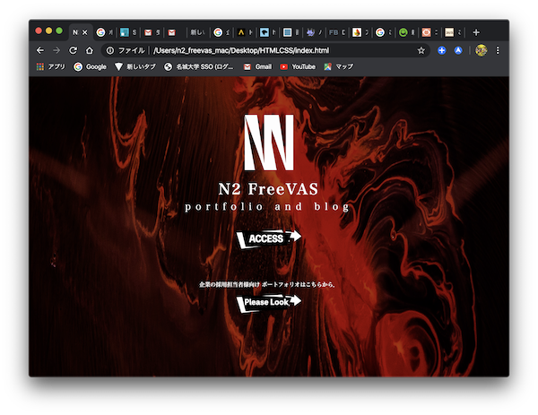
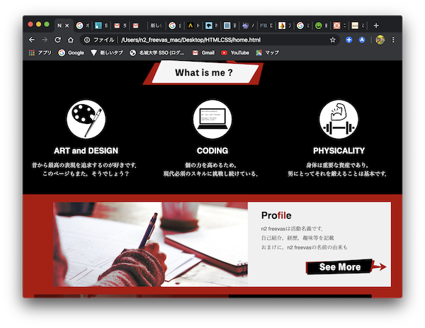
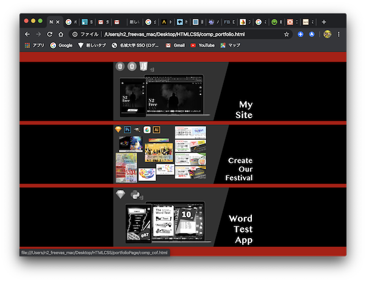
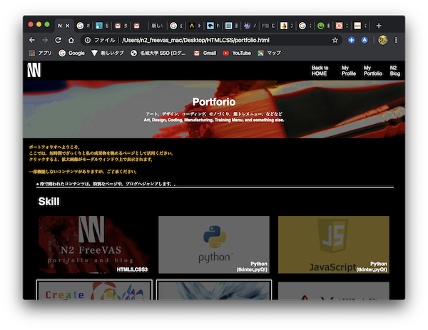
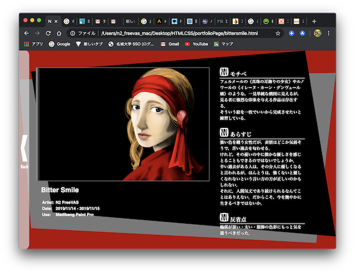
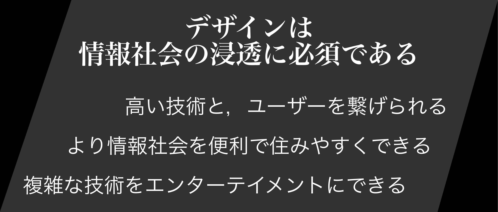
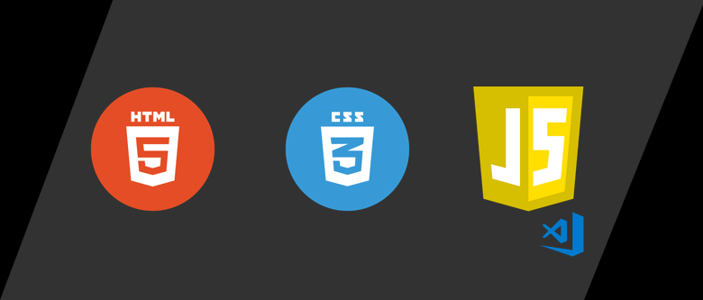

Visual
    
Purpose

そう思うようになったのは，Twitterやinstagramが海外製であると知り，それらと自分の使っていた銀行のサイトなどの日本製サービスを比較した時でした．
かっこよくない
海外製のUIがどうしてあんなに繊細で，シンプルで，無機質で，美しいのか．そして何より，なぜ使いやすいのか．ということを考えだすようになったのです．
このサイトは，「UIを組むのがどれだけ大変か」「海外製のそれを追求することがどれだけ難しいか」「自分にそれができるか」を知るための制作物です．
Using

HTML5
CSS3
JavaScript
使ったのはこの３つ．開発環境はVisualStudioCode．使いやすくて好きです．
JavaScriptを知ったのは修士一年の時でした．知ったときの感想としては「すごく便利」．
Commitment
レスポンシブルデザインである
マイクロインタラクションを意識している
それらの実現のためにJavaScriptを使っている
現在，ブラウジングの7,8割はスマートフォンであり，縦長のページで見やすいことが要求定義として求められます． しかし，だからと言ってPCの横長画面でレイアウトが崩れたり，アクセシビリティを低下させることが許されるわけではない．
JavaScriptとCSS3はその課題を解決してくれた．
同時に，CSSアニメーション(+時々JavaScript)で，マイクロインタラクションを随所に導入しました． 今後，有益なマイクロインタラクションを創造することが，ユーザーとの対話の質を向上させる大きな要員となると確信しています．
Experience
私は，このサイト制作を経て，あることに気付きました．
一つは，端的にいえば「デザインは甘くない」ということですかね．デザインは正解があるわけではない．しかし，最適解やそこに至る極値は存在するということを茫然と理解したことでした．
そしてもう一つが，デザインをコーディングするということの難しさを知った．自分の表現したいことが，コーディングの壁によって阻害される．そんなことが往々として起こる環境だったということを知った．
Other Page
Back to MENU
 Purpose
Purpose